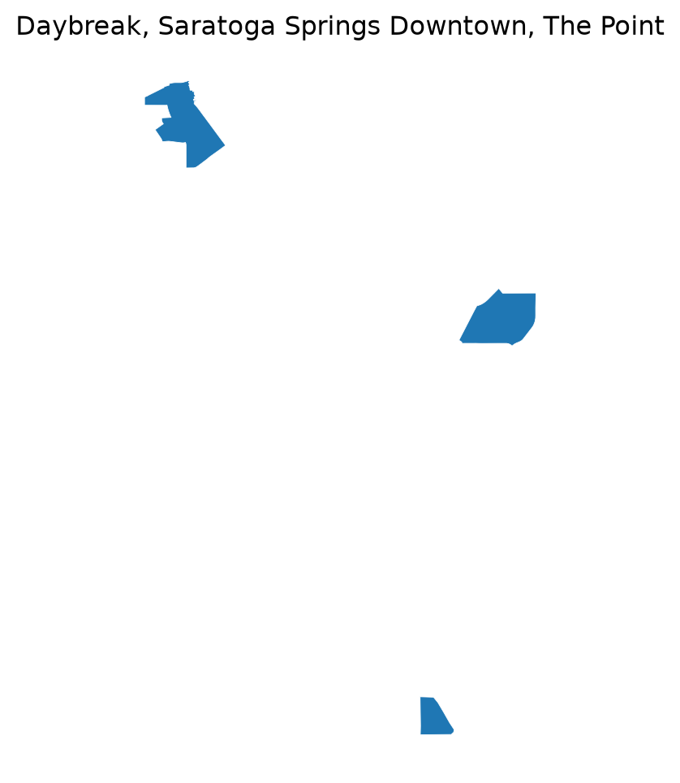

Daybreak, Saratoga Springs Downtown, and The Point
Purpose
Estimate additional housing units and jobs at full buildout for three WCV centers:
Daybreak and Saratoga Springs Downtown: from REMM-forecast post-2025 development, applying each center’s median dwelling-unit-per-acre and employment-density (FAR + job-space) assumptions to the forecast residential / commercial-employment development mix.
The Point: from the development schedule the Point team has provided directly, rather than from REMM.
All spatial joins, filtering, and aggregation below run in DuckDB (with the spatial extension). The one exception: DuckDB’s bundled GDAL build cannot read remm_base_year_data.gdb at all (ST_Read returns 0 rows and strips every attribute down to OGC_FID/Shape on all four layers it contains, and errors outright on parcels_ids_only) – confirmed by testing all four layers directly. pyogrio/geopandas (a separate GDAL binding) reads it correctly, so it’s used once, up front, to cache the parcels and center boundaries as GeoParquet – geopandas’ own to_parquet() writes correct CRS metadata natively, which is simpler and more reliable than hand-constructing GeoParquet metadata ourselves. Every subsequent run reads that cached GeoParquet straight from DuckDB.
Load center boundaries
Show the code
from gis_adhoc_analyses.layer_cache import ensure_layersimport geopandas as gpdL = ensure_layers(["center_boundaries"])centers_preview = gpd.read_file(L["center_boundaries"])centers_preview[["CenterName", "CenterType", "City", "DwellingPerAcre", "NonResFAR"]]
Using cached file (0d old): center_boundaries.gpkg
Text(0.5, 1.0, 'Daybreak, Saratoga Springs Downtown, The Point')

REMM parcels: DuckDB spatial setup
Show the code
from pathlib import Pathimport duckdbimport geopandas as gpdimport pandas as pdRAW_REMM = Path("_data/raw/remm")PROCESSED = Path("_data/processed")PROCESSED.mkdir(parents=True, exist_ok=True)GDB_PATH = RAW_REMM /"remm_base_year_data.gdb"con = duckdb.connect()con.execute("INSTALL spatial")con.execute("LOAD spatial")# one-time geopandas/pyogrio read of the two vector sources DuckDB can't parse# itself (the gdb) or that we'd otherwise re-fetch every run (the gpkg), cached# as GeoParquet -- geopandas.to_parquet() writes correct CRS metadata natively.parcels_geoparquet = PROCESSED /"parcels_2023.parquet"ifnot parcels_geoparquet.exists(): parcels_gdf = gpd.read_file(GDB_PATH, layer="parcels", columns=["parcel_id", "parcel_acres"]) parcels_gdf.to_parquet(parcels_geoparquet)centers_geoparquet = PROCESSED /"centers.parquet"ifnot centers_geoparquet.exists(): centers_gdf = gpd.read_file(L["center_boundaries"], columns=["CenterName", "CenterType"]) centers_gdf.to_parquet(centers_geoparquet)con.execute(f""" CREATE OR REPLACE VIEW parcels AS SELECT parcel_id, parcel_acres, geometry AS geom FROM read_parquet('{parcels_geoparquet.as_posix()}')""")con.execute(f""" CREATE OR REPLACE VIEW centers AS SELECT CenterName, CenterType, ST_Transform(geometry, 'EPSG:4326', 'EPSG:26912', true) AS geom FROM read_parquet('{centers_geoparquet.as_posix()}')""")
<_duckdb.DuckDBPyConnection at 0x2976c3567f0>
Show the code
# only the parcel-level progression metrics tables for now -- they already carry# year_built, was_developed/was_redeveloped, developable, and acreage_dev/redev# (split res vs. nonres) per parcel, so the building-level tables aren't needed# for this step. Converted once to parquet so DuckDB doesn't round-trip pandas.PROGRESSION_PICKLES = {"progression_2023": "run_1842_year_2023_parcel_progression_metrics.pkl","progression_2055": "run_1842_year_2055_parcel_progression_metrics.pkl",}for key, filename in PROGRESSION_PICKLES.items(): dst = PROCESSED /f"{key}.parquet"ifnot dst.exists(): pd.read_pickle(RAW_REMM / filename).to_parquet(dst) con.execute(f"CREATE OR REPLACE VIEW {key} AS SELECT * FROM read_parquet('{dst.as_posix()}')")
Parcels within each center
Centroid-in-polygon join (not ST_Intersects) so a parcel straddling a center boundary is assigned to exactly one center, not double-counted.
Show the code
con.execute(""" CREATE OR REPLACE VIEW parcels_in_centers AS SELECT c.CenterName, p.parcel_id, p.parcel_acres FROM parcels p JOIN centers c ON ST_Within(ST_Centroid(p.geom), c.geom)""")con.execute(""" SELECT CenterName, count(*) AS n_parcels, sum(parcel_acres) AS total_acres FROM parcels_in_centers GROUP BY 1""").df()
CenterName
n_parcels
total_acres
0
Saratoga Springs Downtown
40
238.963509
1
The Point
64
739.545359
2
Daybreak
178
656.151874
Daybreak & Saratoga Springs: REMM developable land
Parcels within each center boundary where REMM develops or redevelops after 2025, per run_1842_year_2055_parcel_progression_metrics.pkl.
Note on this table’s columns:was_developed, was_redeveloped, acreage_dev, acreage_redev (and their _res/_nonres splits) turned out to describe only the single simulated year this snapshot is for (2055 itself) – e.g. a Daybreak parcel with year_built = 2035 (already built) shows was_developed = 0 and acreage_dev = 0 here, because that development event happened in 2035, not 2055. developable = 0 for it too, meaning “developable” flags what’s still vacant as of 2055, not what became vacant after 2025. So the filter below uses year_built (reliable and cumulative per parcel) against each parcel’s own parcel_acres, per the original approach, rather than those event-only columns. Residential vs. commercial/employment acreage is split using the parcel’s current building type flags (is_sf/is_mf vs. everything else).
Still open: excluding development already reflected in the post-base-year housing inventory isn’t applied yet – that source hasn’t been identified (see sources.md). Once it is, add an anti-join here.
Show the code
developable_land = con.execute(""" SELECT pc.CenterName, count(*) AS n_parcels, sum(pc.parcel_acres) AS total_acres, sum(CASE WHEN pm.is_sf = 1 OR pm.is_mf = 1 THEN pc.parcel_acres ELSE 0 END) AS res_acres, sum(CASE WHEN pm.is_sf = 0 AND pm.is_mf = 0 THEN pc.parcel_acres ELSE 0 END) AS nonres_acres, sum(pm.residential_units) AS res_units, sum(pm.job_spaces) AS job_spaces FROM parcels_in_centers pc JOIN progression_2055 pm ON pm.parcel_id = pc.parcel_id WHERE pc.CenterName IN ('Daybreak', 'Saratoga Springs Downtown') AND pm.year_built > 2025 GROUP BY 1""").df()developable_land
CenterName
n_parcels
total_acres
res_acres
nonres_acres
res_units
job_spaces
0
Saratoga Springs Downtown
31
158.428793
137.437893
20.990900
1489.0
4374.0
1
Daybreak
29
135.664032
60.555030
75.109002
6032.0
14971.0
Forecast development mix and buildout capacity
Show the code
# residential vs. commercial/employment forecast ratio (2050 or 2055) -- confirm# whether to derive this from progression_2055's res_units_added/job_spaces_added# directly, or from the allbuildings tables (not yet converted/loaded)# apply center's median DwellingPerAcre to residential share of acreage -> housing units# apply center's median employment density (NonResFAR + job-space assumption) to# commercial/employment share of acreage -> jobs
The Point: buildout from development schedule
Show the code
# load The Point's development schedule (format TBD, see sources.md)# report full buildout as provided; estimate any residual undeveloped area# only if the schedule doesn't cover the full center boundary